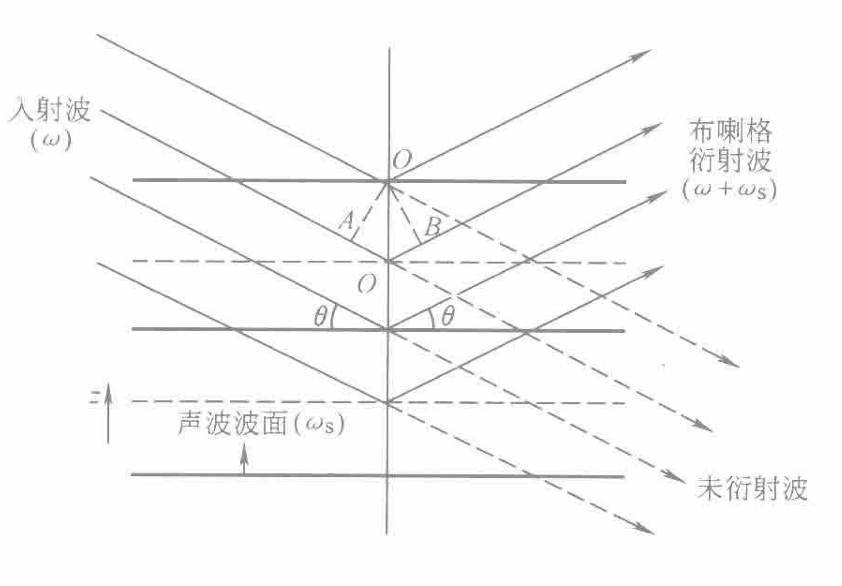

介质在外力作用下发生形变，从而改变其光学性质的现象.
声波是一种弹性波.
超声波是一种纵向机械波.
超声波在液体、气体中基本只能是纵向机械波.
但在固体中，超声波可以是多种形式的机械波.
声波在介质中传播时，由于应变缘故，使介质折射率随空间与时间周期性变化.
光通过这种介质时会发生衍射，这种现象称为声光效应.
声光效应是声场与光波场在声光介质中的相互作用，是弹光效应的一种表现形式.
各向同性介质在受应力作用时，介质具有应力方向为光轴的单轴晶体的性质.
在应力方向及与之垂直方向上产生的折射率之差为：
$$\Delta \left(\frac{1}{n^2}\right) = ps$$各向异性介质中：
一个纵声波在声光介质中传播，介质只在纵声波传播方向受到压缩或伸长.
若介质中的纵声波沿z方向传播，则媒质粒子沿z方向的位移所引起的应变可表示为：
$$s = s_0 \cos(k_s z - \omega_s t)$$因此，当纵声波在介质中传播时，介质折射率随空间位置和时间呈周期变化.
此时介质可视为一以声速运动的声光栅.
由于声速仅为光速的十万分之一，因此对于入射光波来说，运动的声光栅可以认为是静止的，不随时间变化的.
光波通过声光栅的衍射类似于一般的光学光栅的衍射，其光栅方程为：
$$\lambda_s(\sin\theta - \sin\theta_i) = m\lambda$$声光栅的光栅常数等于声波的波长\(\lambda_s\)（空间周期）.
根据超声波长\(\lambda_s\)、光波长\(\lambda\)与声光互作用长度\(L\)的大小，存在两种典型的声光衍射现象：
Bragg衍射时纵声波通过的声光介质可以看作是间距为声波波长的一排排反射层.

根据相邻波面衍射光的光程差等于光波波长的整数倍的条件，结合：
$$\lambda_s(\sin\theta - \sin\theta_i) = m\lambda$$可得Bragg衍射条件为：
$$\theta_i = \theta = \theta_B$$ $$2k\sin\theta_B = mk_s$$由于声波是正弦波，声光介质折射率的空间分布也是正弦函数，因此，Bragg衍射条件应为：
$$2k\sin\theta_B = k_s$$或
$$2\lambda_s\sin\theta_B = \frac{\lambda}{n}$$表明出射波中仅有唯一的峰（衍射级次\(m = +1~or~-1\)），这就是Bragg衍射波.